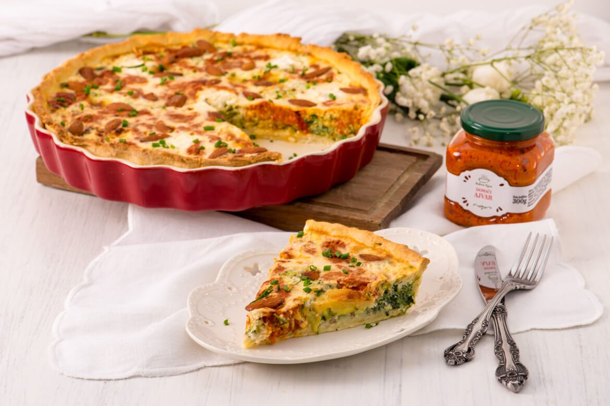

Description
Quiche is one of the specialties of the famous French cuisine, which quickly became very popular all over the world.
First of all, because of its good taste, but also because of the simplicity of preparation and countless possibilities to modify the original recipe.
In fact, this dish is so popular that its original recipe is even celebrated every May 20th as National Quiche Lorraine Day.
It is equally delicious warm or cold, and here we made it with the basic recipe for shortcrust pastry and enriched it with ajvar for a fantastically sumptuous bite.
Ingredients
FOR THE DOUGH:
- 220g of flour
- 100g of cold, chopped butter
- a pinch of salt
- cold water
TO FILL:
- Ajvar
- 450g of young spinach
- 2 green zucchini squash
- 100g of raw almonds
- 100g of mozzarella cheese
- 500ml of cooking cream
- 200ml of milk
- 1 egg
- 1-3 cloves of garlic
- are, pepper, nutmeg
- a couple of spoons of oil
Steps for Pastry
- mix flour and salt and add well-chilled and cubed butter. Combine the ingredients with your hands or with a mixer.
- Add a couple of spoons of water and knead a medium soft dough
- Shape it into a ball, wrap it in transparent foil and leave it in the fridge to cool for 1 hour
- Roll out the cooled dough to a thickness of about 5 mm, place it in a greased tray.
- prick the bottom of the dough with a fork.
Steps for Filling
- Grate the zucchini, briefly blanch the spinach and finely chop the almonds
- In a large bowl, combine zucchini, spinach, chopped almonds, add grated garlic,
a teaspoon of grated walnuts, salt, pepper and 300ml of cooking cream and pour over the dough
- Arrange the pieces of mozzarella, and put a spoonful of ajvar between each one
In a separate bowl, beat the egg, milk, remaining cream and a little salt, and pour over the filling
- Garnish with whole almonds or cherry tomatoes
- Bake the quiche at 180-200C for about 35 minutes, until golden brown
- Remove from the oven and transfer to a safe top to cool slightly